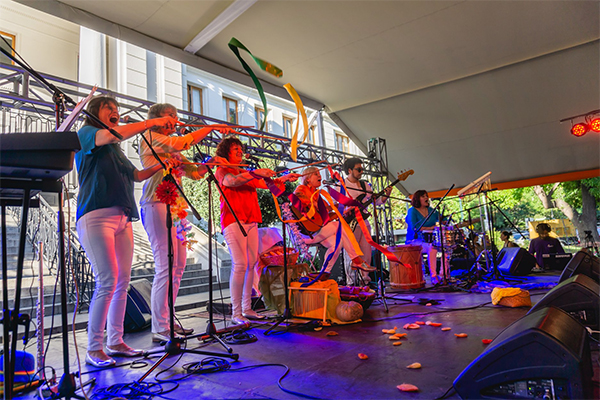
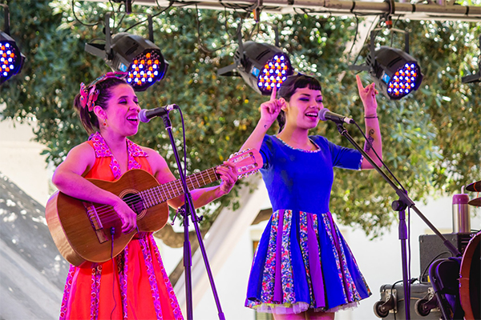
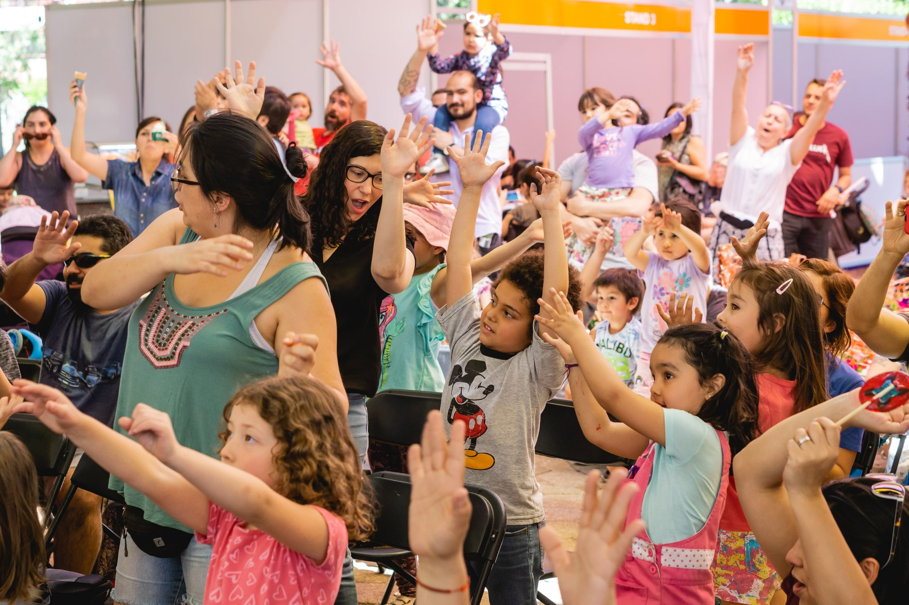
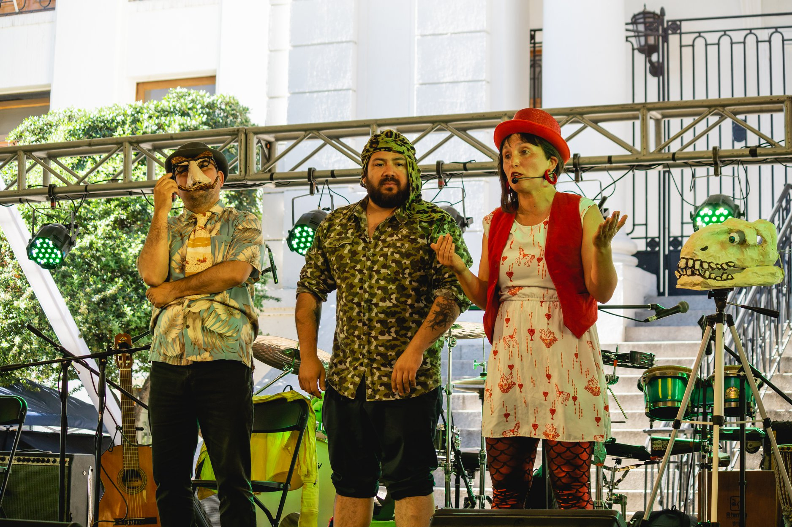
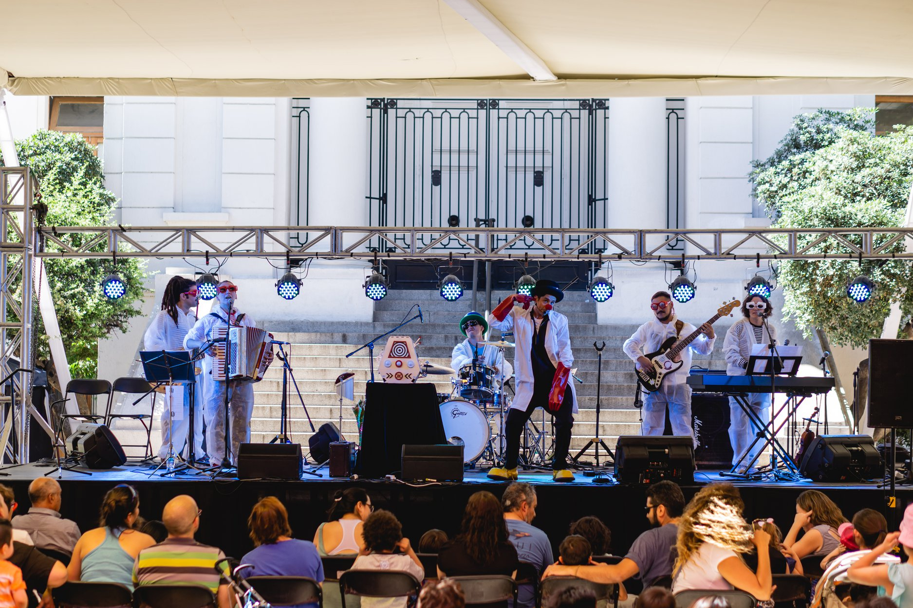
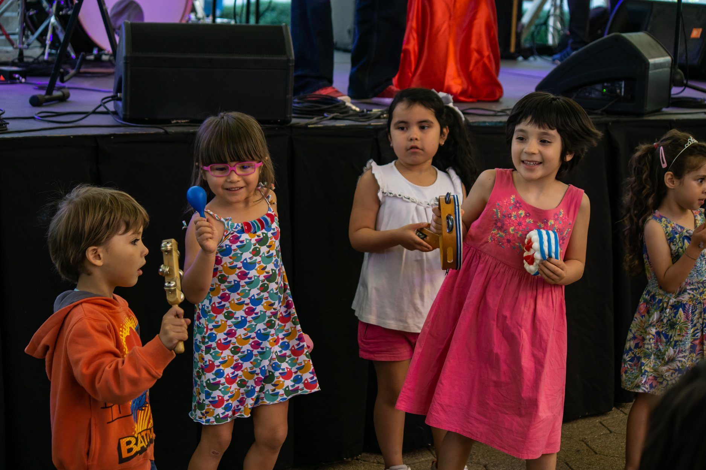
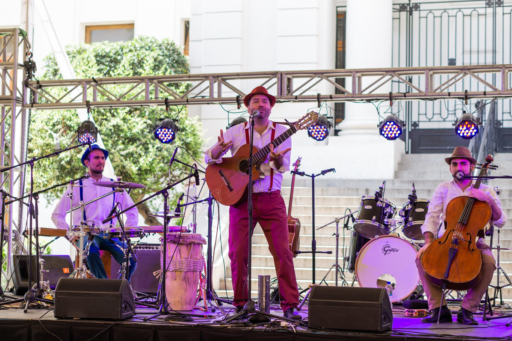

Festicrin 2018
La asociación gremial Creadores Infantiles de Chile, CRIN A. G.,
llevó a cabo la tercera versión de FestiCRIN: Festival Nacional de Música para la infancia, que reunió a destacados artistas
nacionales en una serie de actividades gratuitas que incluyó conciertos masivos, actividades formativas y concursos creativos con una audiencia estimada de 20.000 asistentes en todas sus actividades.
CRIN reúne a una parte importante de los grupos de música para la infancia del país, entre los que se cuentan Mazapán, Zapallo, Acuarela, La Maleta, los Patapelá, Volantín, Paztitas, Victor Arriagada, entre varios otros, que a través de sus acciones busca contribuir a la apertura de nuevos espacios colaborativos y educativos para los niños y niñas. Evento Facebook
CRIN reúne a una parte importante de los grupos de música para la infancia del país, entre los que se cuentan Mazapán, Zapallo, Acuarela, La Maleta, los Patapelá, Volantín, Paztitas, Victor Arriagada, entre varios otros, que a través de sus acciones busca contribuir a la apertura de nuevos espacios colaborativos y educativos para los niños y niñas. Evento Facebook

Galería de Fotos






